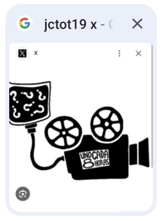

Google search
Significant communication from hackers
- As mentioned in July 2023 timeline doc, manipulated results on Google search became one of the key ways the hackers communicated with me.
- I have no idea how they did it but they were able to completely control the result of google search whenever I searched for the following:
"jctot19 twitter""jctot19 x""1frgvn twitter""1frgvn x"
- I assume it is because they have full root access to all of my devices and can do what they like.
- The
@JackChardwood account was less significant as I didn’t search for this very much at all.
- The
@jctot19 search was extremely significant as there were so few results coming up that anything out of the ordinary stood out - see the website for details.
Curtains
- See justice emails for pics.
Romantic intrigue
- This theme was overwhelming after the 12th June 2023 funeral at the conservatory.
- I mention a lot of these in the timeline, especially those coming from the
@sinremite account, now deleted, which I believe was controlled by Carmen Cano.
- An example of results is here:
- The two top results I saw continuously, for probably up to a year or so, as the top options on Google search for
@jctot19 and @sinremite are interesting.
- The first one is part of the game and is a well-known Spanish phrase meaning Whatever you do, I’m one step ahead.
- The second means he is one of a kind, I don’t think there’ll ever be anyone like him.
- The third, another common theme, refers to nutrition and diet. I believe this is Domingo unable to stop shopping himself.
- I believe the Santiago Garrido account is likely a honey-trap fake account.
- There’s so much of this psychological triggering and signposting stuff, I could write a book on it alone.
- In time, I’ll get this section organized and point out to the timeline.
- I notice I’m duplicating screenshots so there will have to be a bit of a tidy up at some point.
One every eight hours
- One can only guess at what was meant by this.
- One what?
- One sedated target that porn-subscribers know in gang-rape filmed in her apartment, hotel room, or friend’s house?
